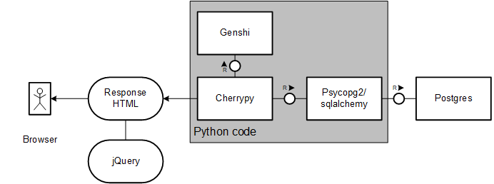
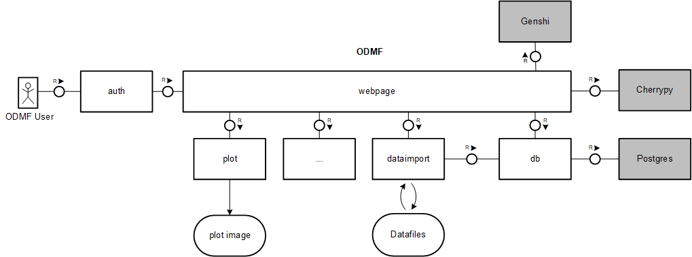

Development¶
This chapter is intended to give an overview about the source code structure and the server stack used for ODMF.
Also it should let you understand the database schema, which is essential to the development since a ORM
framework is in use. So this chapter should be referred to, when developing the platform.
At the beginning there is a brief introduction to the design of the server system. After getting a overview of the
platform and its coherences, the database is described briefly and the
ORM mapping is explained in detail, so when developing you can make use of
the odmf.db-package. A migration part at the end explains the extension of the ODMF database
schema to fit the ODM 1.1 schema.
In the following picture the server stack, consisting of the backend framework cherrypy, which connects the postgres database and renders with the help of templating engine genshi the HTML content and a bit of jquery. Speaking of the server code, the database is accessed consistently via the ORM-mapping framework sqlalchemy. The Cherrypy server also exposes some methods as JSON exports for a rest-like use of data retrieval.

The development was done between 2013-today partially by a team of one or two developers. There are some acceptance and ui tests, but no unit tests.
Structure¶
testsincludes tests written to validate (1) the schwingbach server and (2) the HydroServerLite migrationbinhas scripts for interacting with the database or the HydroServerLitesrccontains the source files of the serverdocsencloses the sphinx documentation sources
Components¶

The code base is divided in three main parts. Server, automated import and database communication.
- Most of the server functionality is in the
webpagemodule. It covers starting and stopping the server. Exposing of webpages and data endpoints.- Module
pagescontains all pages, unless they areplot,site,upload,datasetormap. Inwebpage/lib.pyis utility code. - The
authmodule is based on thebcrypthashing implementation.
- Module
- automated import functions reside in
dataimportmodule. - database and ORM code is in
dbthe module.
Utility code for calibration, conf and markdown parsing are saved in the tools module.
Data¶
This chapter describes the database schema, the differences and limitations of the ORM mapping and finally extending the ODMF schema with SQL views to fullfill the ODM schema.
ODMF schema¶
In the relation dataset many foreign keys are stored, which point to other relations and additional metadata.
The most important are site, valuetype and source, of which the primary key of dataset consists.
The other foreign keys affiliation is straight forward.

The record relation keeps the essential data rows, that describe the measured data. Each row belongs to a dataset relation, which then extends the known data about it.
In the relation person all the user data is stored. Further the relation job contains a metadata to tasks, that are
assigned to a person. A element of relation dataset is assigned via measured_by to a person too.
ORM mapping¶
The Python ORM framework SQLalchemy is used for handling data transactions for user administration, field data import and metadata annotation.
Dataset¶
A dataset describes a valuetype for a specific site and time frame.
Distinction between timeseries and transformed_timeseries. Timeseries are realized data (concrete measured values)
and transformed timeseries are unrealized data, which are generated at runtime and derive from timeseries.
A dataset object has a so called back reference to records with a lazy join on the records, regarding the dataset.
See sqlalchemy docs on backref.
Valuetype¶
Valuetype holds a descripiton for a physical unit.
Valuetype holds a descripiton for a physical unit.
Job¶
A job has a title, description, due date and can be assigned to a person. A job appears in the calendar view.
A job has a title, description, due date and can be assigned to a person. A job appears in the calendar view.
Record¶
A record describes a dataset value for a specific timestamp.
A record describes a dataset value for a specific timestamp.
Site¶
A site describes the location, where data is to be measured.
A site describes the location, where data is to be measured.
Project¶
A project is the highest distinction in the database. Datasets are assinged to a project.
A project is the highest distinction in the database. Datasets are assinged to a project.
Person¶
A person is a user of the database. There are roles and permissions.
Extending ODMF schema¶
This section only describes the mapping of ODM to ODMF entities. ODM entities on their own, are described in more detail in a dedicated design specification.
The following picture consists of relations as nodes and access from relations to relations as edges.
It describes the schema mapping between the ODM (grey) and the ODMF (green) database relations.
Additionally there are helper relations (blue) when the conventional tables are not sufficient.

View ODM.Methods¶
Maps to the following ODMF entity DataCollectionMethod.
View ODM.Sites¶
Maps to the following ODMF entities Site, Dataset and uses from helper views series, sbo_odm_invalid_datasets and sbo_odm_invalid_valuetypes.
View ODM.SpatialReferences¶
Maps to no ODMF entities, since providing only one line of data from the Master Vocabulary.
View ODM.Variables¶
Maps to the ODMF helper view _variables.
Materialized view _variables¶
Maps to the following ODMF entities Valuetype and
Dataset. Also the helpers sbo_odm_invalid_datasets
and sbo_odm_invalid_valuetypes are used.
The name _variables is not part of ODM schema defintion, therefore is not queried by the HydroServer software.
Materialized view series¶
Maps to the following ODMF entities Record and Dataset.
The name series is not part of the ODM schema definition, therefore is not queried by the HydroServer software.
Materialized view ODM.Seriescatalog¶
Maps to the following ODMF entities: Project, Quality, Units, Site, Dataset and DataCollectionMethod. Also to the following helpers series, _variables, sbo_odm_invalid_datasets and sbo_odm_invalid_valuetypes are used.
The Seriescatalog is the big entity of the ODM schema, which stores all series data with the respective meta information.
The ODMF.dataset.id is aggregated through MIN to ODM.seriescatalog.seriesid, to have only one id.
Also joining ODMF.series data to omit rows with series.count < 0.
To provide the begindatetimeutc and enddatetimeutc of ODM.seriescatalog, the attributes start and end of
ODMF.dataset are totalled up with timezone of dataset and the pg_timezone_names.utc_offset.
See Postgresql docs on
timezones.
Upload or Dataimport¶
Corresponds to the /odmf/dataimport directory.
This directory holds the files __init__.py and base.py which mainly provide some kind of abstract skeleton for the
data import. The other files go along with a descriptive filename, which is similar to names of the file including
class. For example XlsImport is for the import of xls(x) files.
Upload and data import is part of the automated import and is further explained in the usage chapter.
Import process¶
Data upload¶
This is done by users of the software. This is usually not done automatically.
Upload type 1: Normal data¶
This is the most common way to upload. All other upload mechanism derives from this kind of upload protocol.
Upload Type 2: Manual measured data¶
TBD
Upload type 3: Log data¶
This is the most special way of uploading data. There are no real time series of data, rather
there are much more single data rows that are identified either with tuple of dataset.valuetype,
dataset.site and so on (Further information :ref:see dataset <schema-dataset>), or with
an explicit dataset.id, to determine one matching dataset where the data row is appended to.
XlsImport¶
Corresponds to odmf/dataimport/xls.py
configuration-files¶
The conf file upload is implemented in dataimport.ImportDescription and dataimport.ImportColumn.
How to add a new configuration keyword:
If the configparser module cannot parse a file, the UnicodeDecodeError is catched and a the estimated encoding
is returned to the user, as part of an error message.
Migration¶
Differences of the database schemata of ODMF (Observatory Data Management Framework) and ODM (Observation Data Model).
WaterOneFlow¶
To understand the details of the How on the concrete implementation of the WaterOneFlow interface for ODMF software system, using a dedicated server.
- What parts communicate how
- SQL Views as mapping from ODMF schema to ODM schema
- How to configure a HydroServerLite instance to fit your needs
Architecture overview¶
The system in use is a slightly modified version of the HydroServerLite, which can be found on Github. The application uses the PHP framework CodeIgniter and can work with several database backends, in the case of the Schwingbach project it connects to a PostgresQL endpoint.
- Parsing client request: The CodeIgniter middleware dispatches the client request and triggers the XML parsing process of the interface.
- Invoking helper methods with request parameters: The parsed parameters from (1) are handed over to the respective methods of the endpoint, that are responsible for building the XML response.
- Building XML response: The actual XML response is build, with usually calling more than one helper method.
The application code which defines the WaterOneFlow interface resides in application/helpers/hydroservices_helper.php. The methods are nested in two layers (1) wof_METHODNAME and db_METHODNAME, where METHODNAME substitutes a method name of the endpoint e.g. GetSites or GetSiteInfo.
Further documentation can be found on the official CUAHSI homepage or just contact the CUAHSI staff.
SQL views¶
Mainly SQL views are used to provide the data of the ODMF schema in the form of the ODM 1.1 schema.
methodsqualitycontrollevelsitessourcesspatialreferencesvariables
Additional materialized views are used to maximize performance for views producing larger result sets. List of materialized views:
_variablesdatavaluesseriesseriescatalog
List of special views:
sbo_odm_invalid_datasetssbo_odm_invalid_valuetypes
A more detailed description of the views can be found in Extending ODMF schema.
Schema mapping validity¶
It’s important to check on the schema mapping validity, since the Schwingbach database schema is extended through different database views to fit the CUAHSI ODM schema. The CUAHSI schema accessed via the HydroServerLite instance.
The postgres helper view ODMF.sbo_odm_invalid_datasets and ODMF.sbo_odm_invalid_valuetypes define the invariants
of the schema mapping. When selected they return all ODMF.datasets and ODMF.valuetypes which will break the ODM
schema constraints.
Items of ODMF.dataset are omitted when the following rules apply on them:
dataset.start = dataset.end(odmf.datasetattributes start and end, can be identical in the rare case of a size of just one record.)dataset.access = 0, data is only for internal usedataset.project is NULL
Items of ODMF.valuetype are omitted, when one of the following rules apply on them:
valuetype.cv_unit is NULLorvaluetype.cv_variable_name is '', therefore no mapping to items of the controlled vocabulary can be done.valuetype.id in (30), when the id is in list of integers, which to be omitted.
The view seriescatalog is pointer where all series are published. So to prevent the ODM schema views on the ODMF schema tables to break, the view seriescatalog filters based on sbo_odm_invalid_datasets helper view all invalid datasets.
Daily jobs¶
The creation of the transformed timeseries is done via the update_transformedvalues.py in
the odmf.migration_util.cuahsi namespace.
The script fetches all datasets that are transformed_timeseries and creates the data record rows.
This rows would usually not reside as realized data in the database. But this is done to improve
the performance of the WaterOneFlow API, when requesting data, which is a transformed_timeseries
in terms of the ODMF schema.
Different phases described:
- Deletes all old realized transformed_timeseries records
- Fetches all tranformed_timeseries datsets and then records and caches them in python data structure
- Applies transformation to the values and persists tranformed record value in the
ODMF.recordtable.
The realized records cannot be queried by the ODMF software system. They are only visible to the WOF
API, because the ORM layer only accesses records with dataset.type that are non-transformed_timeseries.
Configuration¶
An easy way of configuration is not possible at the moment, because the deployment of the HydroServerLite is done via static SQL scripts. To configure the system, this scripts can be altered, but this is somehow impractical, when done more than once.